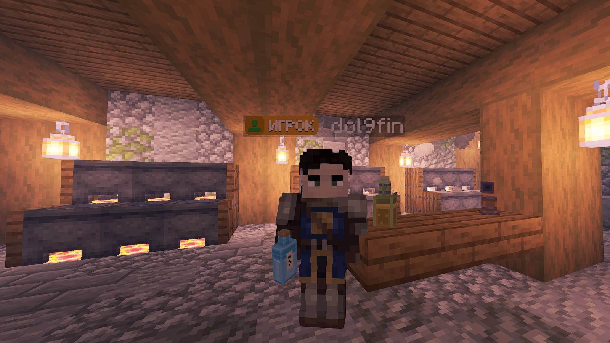

Гайды / Ремёсла
Пивоварение и напитки
44 напитка — от чая до абсента. Варка в котле, выдержка в бочках, перегонка и смешивание.

Что можно сварить
Каждый напиток бывает трёх уровней — от неудачного до лучшего. Например: «Выдохшееся пиво» → «Пшеничное пиво» → «Баварское пшеничное».
| Группа | Примеры |
|---|---|
| Чаи | Лимонный, чёрный, зелёный, улун, масала, ройбуш, белый, цветочный, сиреневый, одуванчиковый, лечебный отвар |
| Пиво и медовуха | Сусло, пшеничное пиво, медовуха |
| Сидры | Яблочный, арбузный, ягодный |
| Вина | Красное, белое, яблочное, арбузное, тыквенное, кровавое |
| Вермуты | Красный, сухой, летний, садовый, охотничий |
| Крепкое | Бренди, кальвадос, водка, самогон, бурбон, виски, ром, текила, джин, абсент |
Лучшие версии дают сильные эффекты: регенерацию, силу, ночное зрение, даже невидимость.
Шаг 1. Варка в котле
- Поставь котёл с водой над источником тепла: костром, огнём, лавой, магмовым блоком или печью.
- Брось в котёл ингредиенты в нужном количестве — например, 10 пшеницы и 3 хмеля для пшеничного пива.
- Жди нужное время. Одна «минута варки» — одна реальная минута. Цвет воды подсказывает, что получается.
- Набери напиток пустыми бутылками.
Ошибся с количеством или временем — напиток выйдет хуже уровнем, а то и вовсе испорченным.
Шаг 2. Выдержка в бочке
Многие напитки нужно выдержать.
- Построй бочку из досок и поставь на неё табличку со словом «бочка» или «barrel».
- Положи напитки внутрь и закрой.
- Один «год» выдержки — это один игровой день, 20 реальных минут. Пиву нужно около 2 лет, винам и крепкому — больше.
- Важна порода дерева: рецепт просит дуб, берёзу, ель, тёмный дуб, тропическое дерево, медь или любую. Похожие породы засчитываются частично.
Шаг 3. Перегонка и смешивание
Перегонка
Крепкие напитки перегоняют в варочной стойке. Рецепт говорит, сколько нужно прогонов — например, 2 для бренди или 4 для абсента.
Смешивание
Вермуты и коктейли смешивают из готовых напитков и добавок.
Опьянение
У каждого напитка есть крепость и токсины. Пиво — около 5%, абсент — больше 40%. Если пить много крепкого, начинаются опьянение, шатание и тошнота, а самые грубые напитки ещё и отравляют. Лучшие версии напитков содержат меньше токсинов.
Команды
/brew | меню пивоварения |